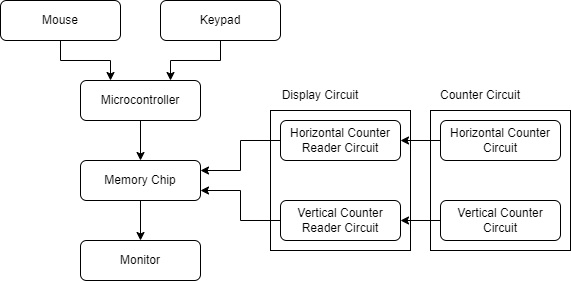
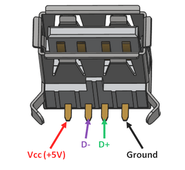
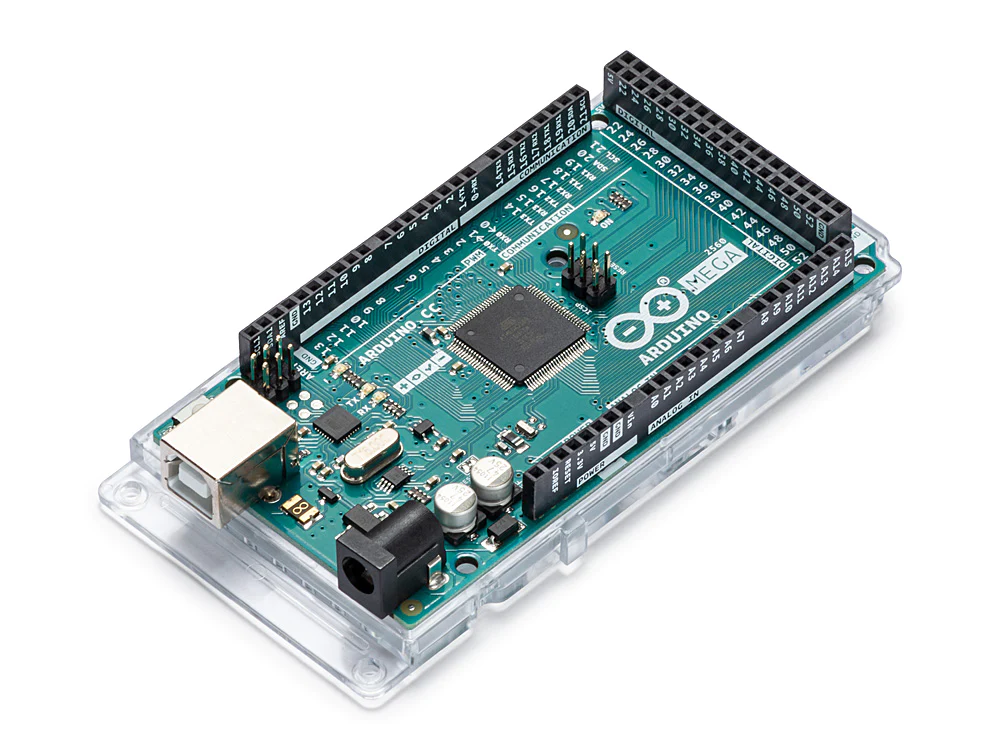
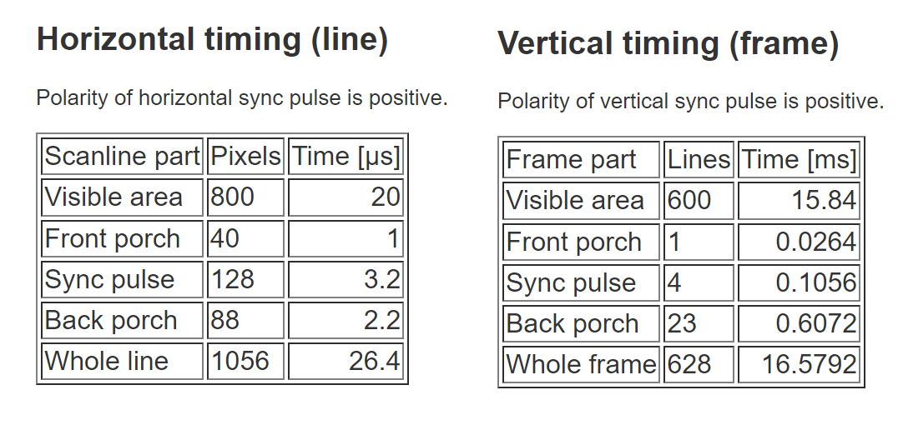
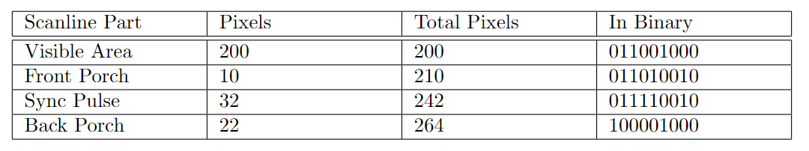

TTL Chip-Based VGA Driver
A Breadboard-based VGA Driver that supports live-editing of the image displayed on the monitor.
For my ECE 110/120 Honors Lab project, my team made a VGA driver out of breadboards and TTL chips. If you are interested in the technical details, you can find the full lab report here. In this post, I will give you a quick rundown of what this project is about! Please refer to the lab report for detailed explaination. Credit of this project also goes to my teammates Phillip Chen (pxchen2@illinois.edu), Tony Liu (zikunl2@illinois.edu), and Hanwen Zhang (hanwenz7@illinois.edu).

1. Introduction
I have been wondering how computers works since I was a kid. After taking ECE 120 (introduction to computing), many of my questions where answered regarding generally what’s in a computer. However, how computer displays stuff still remained a mystery to me. To unveil this mystery, I decided to look up a very classic way of displaying graphics: VGA. Upon some research, I found the VGA signal format and Ben eater’s VGA driver using many ttl chips that can display static images, which eventually lead to this project here.
This circuit takes two user inputs (a keyboard and a mouse) and displays the input on the monitor. The mouse will draw lines on the screen while the keypad will generate shapes around the position of the curser. A block diagram is shown below.

2. Some background information
2.1 Keypad
We considered using a whole keyboard and display characters on the screen at the beginning. Such a approach would require a very large font rom to store the drawing of each character, so we abandoned that idea and switched to a simpler approach.
We used a 4x4 keypad, and each key on the keypad has a different function. For example, the “*” key will fill the whole screen with a solid color. We can also select what color to use through the A and C key. To keep our project simple, we used 2-bit encoding for each color (R, G, and B) channel, so there are, in total, 64 different possible color outputs.
The circuit inside of the keypad is a 4x4 scanning matrix that, when a button is pressed, it connect a R channel and a C channel showed in Fig. 3, telling the microcontroller it connected to that a key is pressed. Again, detailed explaination can be found in the lab report.

2.2 Mouse
We used a standard USB mouse that support PS/2 for this project. While moving this mouse, it would move a cursor on the monitor and while holding left key, it would draw colored pixels through the path it moved through.

There are four pins on the connector as shown in Figure 4. We decided to communicate with the mouse through PS/2 Protocol becuase it is much simpler than USB. In this case, the D- pin will carry its data signal while D+ pin carries its clock signal. Like the keypad, we used a microcontroller to decode the signals from the mouse.
2.3 Microcontroller
The microcontroller will be responsible for taking the input from both the mouse and the keypad, processing them, and loading drawing data into the memory chip (a 512Kx 8 bit SRAM). We applied a Arduino Mega 2560 Rev3 shown in Figure 5 as the microcontroller for our project mostly due to its large number of I/O pins.

For example, when the clear button is pressed, the Arduino will take that input from the keypad, go through all memory location we used in the memory chip, and set all of them to zero.
2.4 VGA Protocol
The idea behind VGA protocol is inspired heavily from the big old CRT monitors. In them, there is an electron gun that shoots electron to every pixels, determining what color they are. The electron gun starts at the upper left corner of the screen, goes to the right pixel by pixel, and switches to the next line when it finishes a whole line. The original term “VGA” refers to the 640 x 480 @ 60Hz resolution on a monitor, and here, we are using this word to refer to all signals that uses a VGA port.
Note that other than the visible areas we see on screen, there are also may “hidden” sections that should be considered when generating the VGA signal. A breakdown of those areas are shown in Figure 6. The sync pulses (Vertical Sync and Horizontal Sync) are especially important in this application.

The size of each sections are determined by the signal resolution. For example, for an 800 x 600 @ 60Hz signal, the required horizontal and vertial timing information is shown in Figure 7.

To simplify our project, we generated a 800 x 600 @ 60Hz signal but cut the width to 200, leading to the timing shown in Figure 8:
